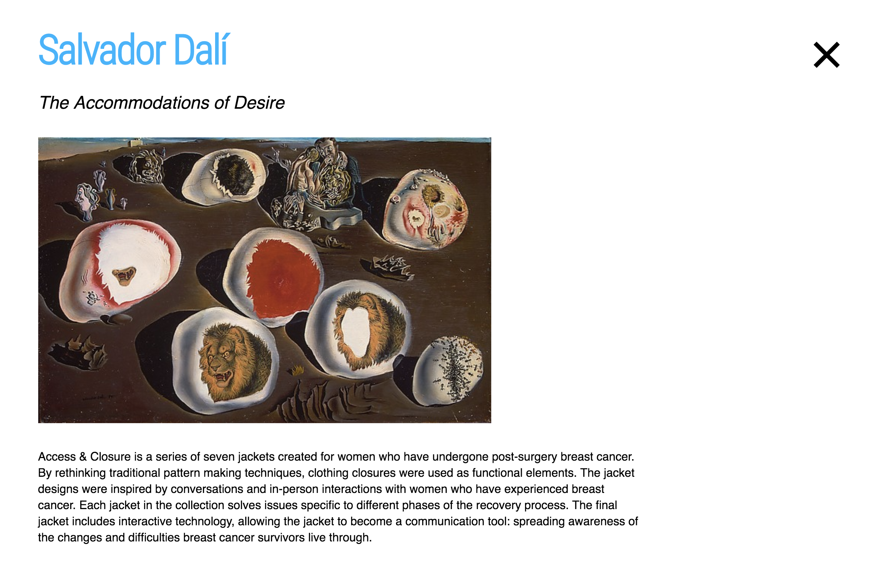

The Metropolitan Museum of Art:
Filter By Art Period
Try it!
Overview
For this data-driven web application, I was inspired by the Metropolitan Museum of Art website. With data from a JSON file, I created a dynamic html website with hash pages and a filtering system.
Design Question
How might we create a way for visitors of the MET website to search by art period?
- Node backend
- Socket.io client to server communication
- Express web server
User Flow
1. How it works: The first page allows users to filter artwork by artist period by checking the boxes. You can select multiple boxes and clear to start over.

2. #/Hash Pages: What is nice about hash pages is that everything runs at once and there is no worry about wating for each page to load. Simply click the X to go out of each page.
